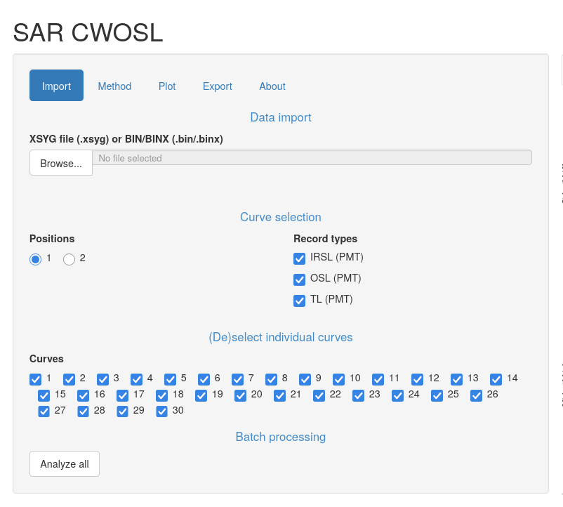
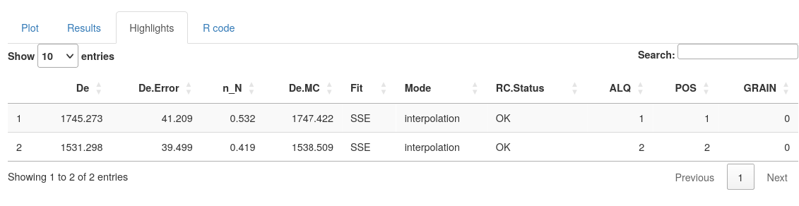
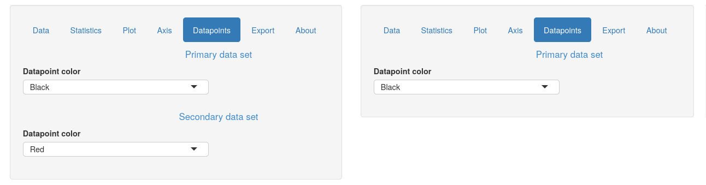
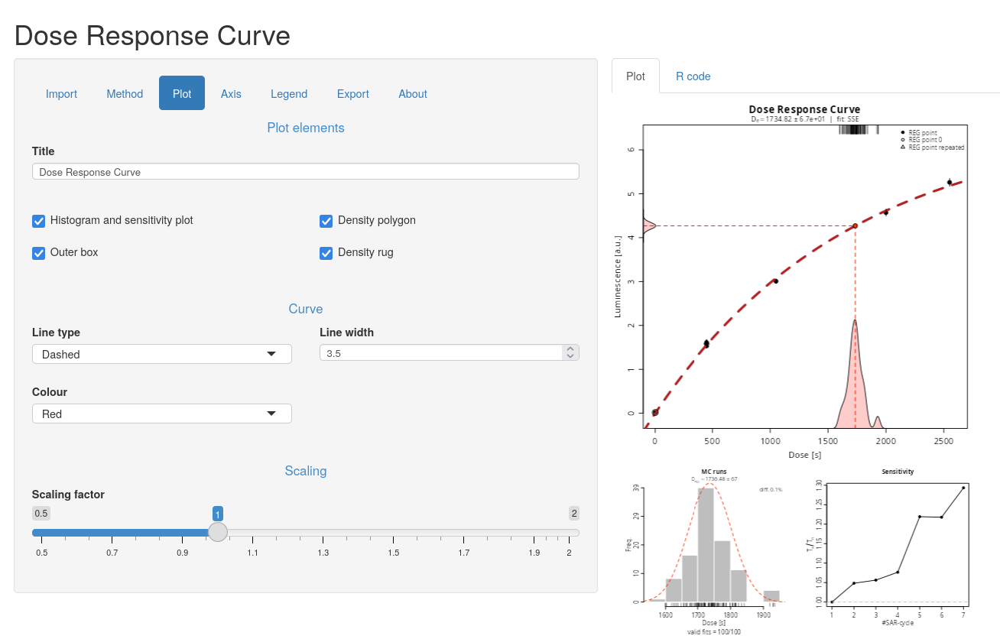

RLumShiny Release 0.2.8
Just over seven months since our previous release of RLumShiny, we are pleased to announce the release of RLumShiny 0.2.8. In the past months we’ve been chipping away at fixing little bugs and annoyances, as well as keeping compatibility with the recent Luminescence 1.3.0.
While there are no new apps in this version, during we have strengthened and improved a good number of the existing ones, especially those that were added the last time round.
Big thanks, as always, to Christoph Burow for handling the actual release and publishing the package on CRAN.
Changes to sarCWOSL
The sarCWOSL app has seen plenty of updates and improvements:
-
While in the previous release we introduced support for
XSYGfiles, this time we have added supportBIN/BINXfiles. This vastly expands the applicability of the app to real analyses. -
The app now allows selecting the curves to analyse directly from its user interface. This solves one of the major drawbacks in the app, as before one would have to do the curve selection manually in
Luminescencebefore usingRLumShinyon the filtered object. This step can now be taken care of within the app itself. Note, however, that for performance reasons there is a 30MB cap on the file size, so for very large files a manual step may still be required.
-
Moreover, previously we would incorrectly merge multiple aliquots instead of analysing them separately. That was done so that we could run the analysis at least on simple files, and avoid unpleasant crashes when multiple aliquots were present. However, thanks to the filtering logic introduced at the previous point, we can now analyze files containing multiple aliquots. We have also added a button that performs automatically the analysis on all curves available, so that it’s not necessary to click on each curve manually.
-
Numerical results obtained at each position appear in tabular form under the
Resultstab. However, as this output can be overly detailed, there is also aHighligthstab that shows only a selection of the most important columns of results.
-
The app saw a few performance fixes, in that it avoids some spurious computations that used to happen whenever a new file was loaded. In terms of functionality, we added support for choosing the fit mode (interpolation or extrapolation) as well as the fit method (single saturating exponential, double saturating exponential, GOK, OTOR, linear, quadratic). We have also added support for disabling background integral subtraction, and corrected the setting of the maximum number of channels.
Other changes
Several apps (abanico, doserecovery, KDE and radialplot) were refined
so that some elements of their user interface would not be shown unless really
required. Thanks to this effort, several controls related to the secondary
dataset are no longer shown when working on just a single dataset, as can be
seen for example in the KDE app (previous version on the left, current on
the right).

For irsarRF and sarCWOSL we also improved the performance at startup and
whenever a new file is loaded by avoiding some spurious recomputations. These
used to occur automatically even before the user clicked on any UI element,
causing an initial slowdown as well as an additional plot redrawing.
Behind the scenes, we have worked to consolidate shared functionality into internal helpers, so that future maintainability and consistency of the code can be more easily achieved.
The following are the most relevant app-specific changes:
-
abanicono longer requires drawing the entire plot in a separate window just to compute the y-axis limits. -
doseresponsecurvenow allows to customise line type, width and colour of the dose-response curve, and no longer crashes when exporting a plot.
-
finitemixtureno longer allows the minimum and maximum number of components to coincide, asLuminescencedoesn’t support specifying only one component and would throw an error.
There are exciting changes coming to RLumShiny in the next few months. These
will concern better interactivity (and performance) as well as a cleaner and
more modern appearance of the apps.